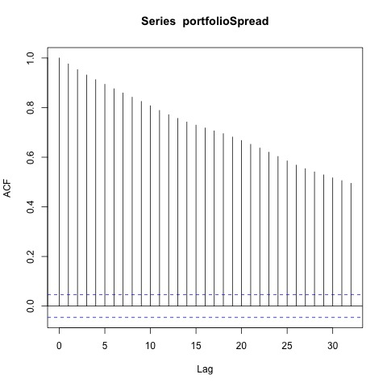
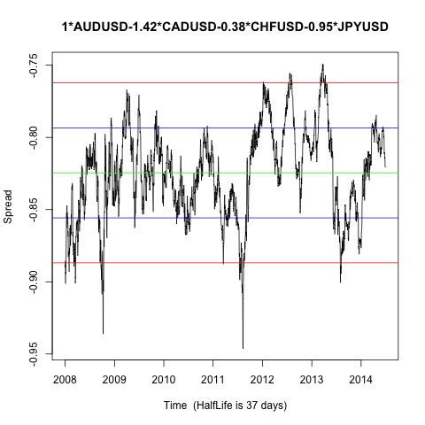

Johansen-Procedure "" "10pct" "5pct" "1pct" "r <= 3 |" 1.82 7.52 9.24 12.97 "r <= 2 |" 5.87 17.85 19.96 24.6 "r <= 1 |" 21.73 32 34.91 41.07 "r = 0 |" 50.86 49.65 53.12 60.16 "AUDUSD.l2" "CADUSD.l2" "CHFUSD.l2" "JPYUSD.l2" "constant" "AUDUSD.l2" 1 1 1 1 1 "CADUSD.l2" -1.42 1.35 -1.48 -51.83 -3.23 "CHFUSD.l2" -0.38 -1.03 2.52 28.55 1.24 "JPYUSD.l2" -0.95 -98.28 -24.33 -3847.25 -103.09 "constant" 0.82 -0.07 -1.86 60.24 2.49
Augmented Dickey-Fuller Test p-value 0.01 